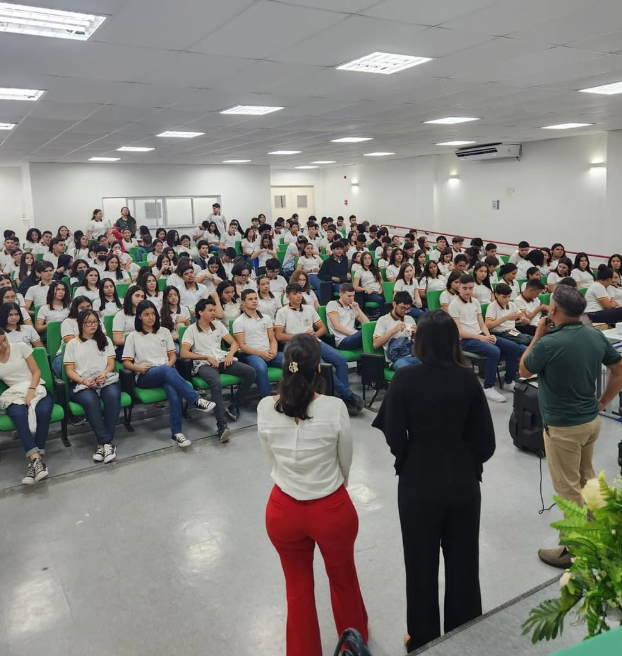
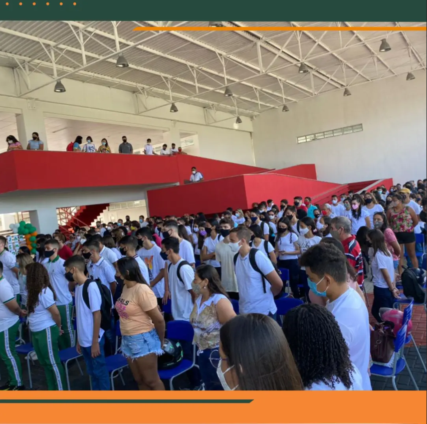
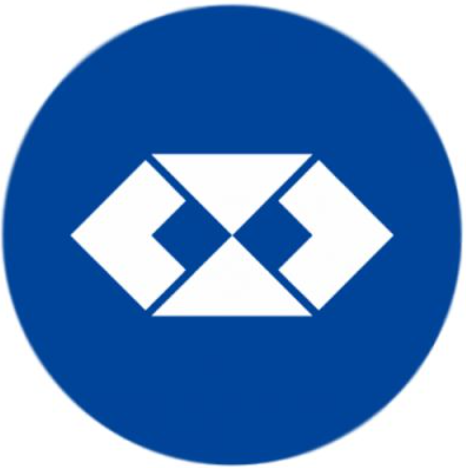
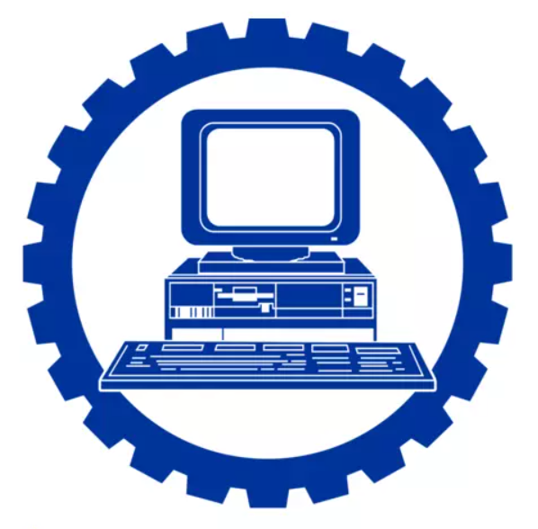
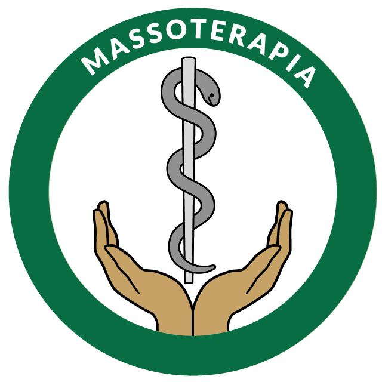
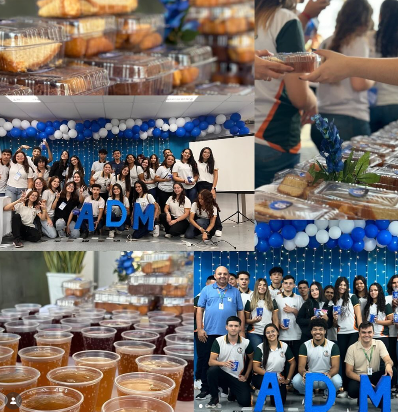
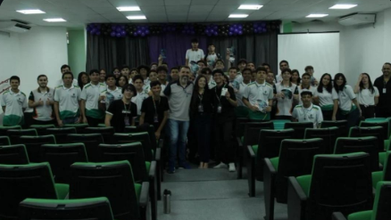
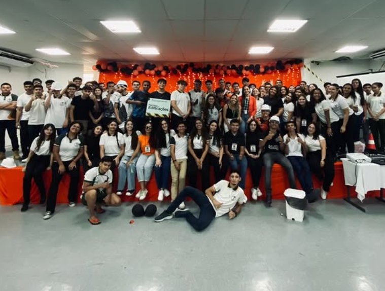
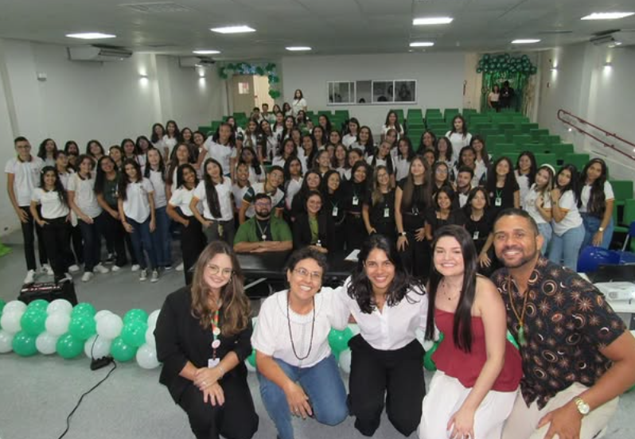

Conheça nossa escola profissionalizante
Formando jovens para o futuro
Sobre Nossa Escola

A Escola Estadual de Educação Profissional Lúcia Baltazar Costa é um centro de excelência dedicado à formação integral do jovem. Aqui, acreditamos que a educação vai além da sala de aula: unimos a base acadêmica sólida ao ensino técnico de alta qualidade, preparando nossos alunos para os desafios do mercado de trabalho e para o exercício da cidadania.
Com uma infraestrutura moderna e uma equipe pedagógica comprometida, nosso objetivo é oferecer um ambiente que estimule a inovação, a liderança e o protagonismo estudantil. Mais do que formar técnicos, formamos cidadãos preparados para construir um futuro brilhante.

Biografia
Fundação e Propósito
Inaugurada em 10 de março de 2022, com a presença do então governador Camilo Santana, a Escola Estadual de Educação Profissional (EEEP) Lúcia Baltazar Costa nasceu com o compromisso de ser um pilar de transformação para a juventude de Limoeiro do Norte. A instituição não é apenas um espaço de ensino, mas um centro de formação integral que prepara o jovem para os desafios do século XXI, unindo a excelência acadêmica à preparação prática para o mundo do trabalho.
Cursos Técnicos

Curso Técnico em Administração
O curso técnico em Administração prepara o estudante para atuar na organização e gestão de empresas, desenvolvendo competências essenciais para o ambiente corporativo. Durante a formação, o aluno aprende sobre planejamento, controle financeiro, gestão de pessoas, marketing e rotinas administrativas. Também são trabalhadas habilidades como comunicação, liderança e tomada de decisões. Ao concluir o curso, o profissional estará apto a atuar em diversos setores de organizações públicas e privadas, contribuindo para a eficiência dos processos e podendo também investir no próprio negócio ou dar continuidade aos estudos na área.

Curso Técnico em Desenv. de Sistemas
O curso técnico em Desenvolvimento de Sistemas forma profissionais capacitados para criar, testar e manter softwares e aplicações digitais. Durante o curso, o aluno aprende lógica de programação, desenvolvimento de sistemas, banco de dados, além de linguagens utilizadas no mercado. Também são trabalhadas habilidades como resolução de problemas, pensamento lógico e trabalho em equipe. Ao concluir a formação, o estudante estará preparado para atuar na área de tecnologia, podendo desenvolver sites, aplicativos e sistemas, ou ainda dar continuidade aos estudos em cursos superiores da área de TI.
Curso Técnico em Edificações
O curso técnico em Edificações prepara o aluno para atuar na área da construção civil, participando do planejamento, execução e acompanhamento de obras. Durante a formação, o estudante aprende a interpretar projetos, realizar medições, elaborar orçamentos e aplicar normas técnicas de segurança e qualidade. Também desenvolve conhecimentos em materiais de construção, topografia e desenho técnico. Ao concluir o curso, o profissional estará apto a colaborar com engenheiros e arquitetos, contribuindo para a realização de obras com eficiência, segurança e sustentabilidade.

Curso Técnico em Massoterapia
O curso técnico em Massoterapia forma profissionais capacitados para promover o bem-estar físico e mental por meio de técnicas de massagem terapêutica. Durante a formação, o aluno estuda anatomia, fisiologia e diferentes métodos de massagem, como relaxante, terapêutica e estética. Também aprende sobre postura profissional, ética e atendimento ao cliente. Ao concluir o curso, o profissional estará apto a atuar em clínicas, spas, academias ou de forma autônoma, contribuindo para a saúde, alívio de tensões e qualidade de vida das pessoas.
Eventos Técnicos

Evento de Administração - II ETAD

Evento de Desenv. de Sistemas - II CODETALKS

Evento de Edificações - II CONED

Evento de Massoterapia - II CEMAS
“CODETALKS o melhor evento da ep!!”
Rhian
Aluno de Desenv. de Sistemas“O evento CEMAS foi o melhor que já participei!”